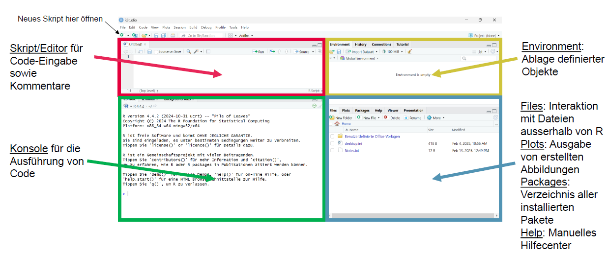
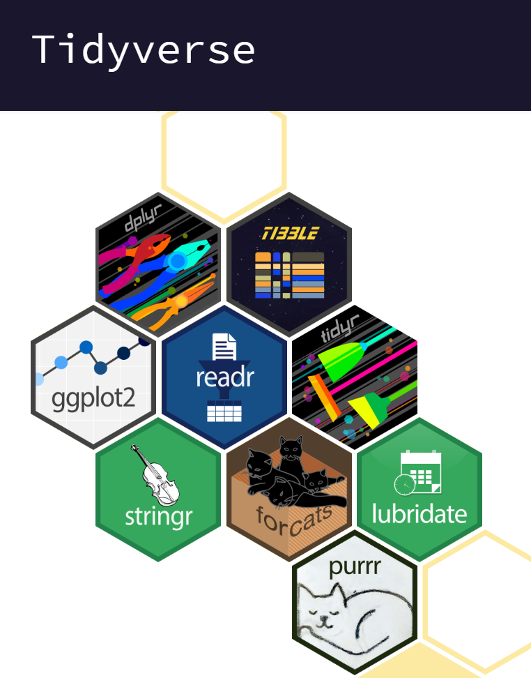

Bei Bedarf finden sich hier nochmal die Folien zu EH1:
Und hier die Folien zu EH2:
Installiere R und RStudio:
Installation von R – neueste Version 4.5.2: https://stat.ethz.ch/CRAN/
Installation von RStudio (Version 2026.01.06): https://posit.co/download/rstudio-desktop/
Du weisst nicht, was es mit R auf sich hat? Hier ist eine Kurzerklärung: https://methodenlehre.github.io/einfuehrung-in-R/
RStudio öffnen & Einstellungen vornehmen: Unter «tools» –«global options» die unter 1.1. beschriebenen Einstellungen vornehmen:
https://methodenlehre.github.io/einfuehrung-in-R/chapters/01-workflow.html
Im folgenden machen wir uns vertraut mit der Oberfläche von RStudio:

Tidyverse ist ein Meta-Paket, das mehrere Pakete umfasst 
Pakete installieren (nur 1x notwendig) -> führe diesen Code in der Konsole aus
Paket laden (innerhalb des Skriptes, bei jedem Neustart von R notwendig)
Tipp: Pakete regelmässig updaten mit z.B. update.packages()
a. Nutze R als Taschenrechner
123+456
144*112
10/3
Quadriere 420
Ziehe die Quadratwurzel aus 146 mit der Funktion sqrt()
Berechne den Rest der Division 10/3 mit dem Modulo Operator: %%
| Zeichen | Bedeutung |
|---|---|
| + | Addition |
| - | Substraktion |
| * | Multiplikation |
| / | Division |
| sqrt(x) | Quadratwurzel |
| abs(x) | Betrag (absoluter Wert) |
| x %% y | Modulo (x mod y) 5 %% 2 = 1 |
| ^ | Potenz |
Erstelle eine Variable x und weise ihr mit dem Zuweisungsoperator <- den Wert 5 zu.
Weise der Variable y eine beliebige Zahl zu. Teile anschliessend x durch y und speichere das Ergebnis in der Variable z.
Schaue dir das Ergebnis in deinem Environment an. Lass dir das Ergebnis auch in der Konsole ausgeben. Das Environment findest du oben rechts, die Konsole ist unter deinem Skript.
Erstelle zwei Variablen: eine mit deinem Vornamen und eine mit deinem Nachnamen. Zeichenketten (character-Variablen) müssen in R in Anführungszeichen ("") gesetzt werden.
Kombiniere deinen Vor- und Nachnamen mithilfe der Funktion paste zu deinem vollen Namen. Speichere das Ergebnis in der Variable voller_name.
Definiere einen Vektor first_vector mit den Zahlen 100, 80, 54 und 73. Verwende dazu die folgende Syntax: first_vector <- c(...).
Wende den Befehl boxplot() auf deinen Vektor an
Berechne die Summe sum()und den Mittelwert mean() von deinem Vektor
Multipliziere deinen Vektor mit *2 und schaue dir das Ergebnis an.
Die wichtigsten Operatoren und Funktionen in R: https://methodenlehre.github.io/einfuehrung-in-R/chapters/02-R-language.html
| Funktion | Bedeutung |
|---|---|
| mean(x, na.rm =FALSE) | Mittelwert |
| sd(x) | Standardabweichung |
| var(x) | Varianz |
| median(x) | Median |
| sum(x) | Summe |
| min(x) | Minimalwert |
| max(x) | Maximalwert |
| range(x) | Minimal - und Maximalwert |
Teste, ob die Zahl 5 größer als 2 ist –> TRUE or FALSE?
Teste, ob 6 ungleich 8 ist –> TRUE or FALSE?
Subtrahiere 80 von 50 und speichere das Ergebnis in einer Variable namens diff_score.
Berechne mit abs() den absoluten Wert von diff_score. Lasse dir diesen mit print(diff_score) in der Konsole ausgeben.
| Zeichen | Bedeutung |
|---|---|
| == | gleich |
| != | ungleich |
| > | grösser |
| >= | grösser gleich |
| < | kleiner |
| <= | kleiner gleich |
| | | Logisches Oder |
| & | Logisches Und |
Informative Kommentare im Code sind elementar für die Nachvollziehbarkeit einer Datenanalyse
Schreibe einen Kommentar, indem du ein # verwendest.
Code, der nach einem # steht, wird nicht ausgeführt. Setze ein # vor eine Codezeile, führe sie aus und beobachte, was passiert.
Es gibt verschiedene Konventionen, wie man Variablen benennen kann.
Einige wichtige Grundsätze dafür sind:
Namen können aus Buchstaben, Zahlen sowie den Zeichen _ oder . bestehen.
Sie müssen mit einem Buchstaben beginnen und dürfen keine Leerzeichen enthalten.
Sonderzeichen und Grossbuchstaben sollten vermieden werden.
Keine Namen verwenden, die bereits für Funktionen reserviert sind (z. B. mean()).
Der Name sollte den Inhalt der Variablen möglichst gut beschreiben → Reproduzierbarkeit; clarity instead of brevity.
Am besten englische Bezeichnungen verwenden, um internationalen Standards zu folgen.
Übung:
Definiere eine neue Variable nach snake_case.
Definiere eine zweite Variable nach CamelCase.
In unserem Seminar verwenden wir den snake_case.
Speichere die beiden höchsten Werte aus first_vector in einer neuen Variable ab (Tipp: verwende sort() )
Erstelle einen Vektor mit Werten von 0-1000 in 10er Schritten (Tipp: suche nach der Funktion seq())
Ziehe zufällig eine Zahl aus diesem Vektor
Generiere einen Vektor, der aus 50 Wiederholungen der Zahl 3 besteht
Tipps zu diesen Aufgaben findest du bei Bedarf hier: https://methodenlehre.github.io/einfuehrung-in-R/chapters/02-R-language.html (Kapitel 2.1)
Tipp: Suche nach der Dokumentation der folgenden Funktionen: sort(), seq(), sample, rep().
Die Dokumentation kannst du mittels ?Funktionsname aufrufen.
numeric vectors: werden in integer (ganze Zahlen) und double (reelle Zahlen) unterteilt, z.B.
numerical_vector <- c(1, 2.5, 4)
character vectors: bestehen aus Zeichen, welche von Anführungszeichen umgeben werden, z.B.
text_vector <- c("Hello", "World")
logical vectors: Elemente dieses Typs können nur 3 Werte annehmen: TRUE, FALSE oder NA
log_vector <- c(TRUE, FALSE, TRUE)
Vektoren müssen aus denselbsten Elementen bestehen, d.h. z.B. numeric und character können nicht gemischt werden. Vektoren werden meist mit c() erstellt.
ℹ️ Hinweis: Hilfestellungen zu den Übungen findest du hier.
Nicht alle benötigten Funktionen sind explizit erwähnt. Nutze bei Bedarf eine Suchmaschine, um passende Befehle zu finden.
Lade den öffentlich in R verfügbaren Datensatz palmerpenguins mit den folgenden Befehlen:
Wie viele Variablen (Spalten) sind enthalten?
Wie viele Beobachtungen (Zeilen)?
Nutze verschiedene Befehle und vergleiche die Ergebnisse:
Verwende die Hilfefunktion ?funktionsname um dir zeigen zu lassen, welche Argumente die Funktionen benötigen.
head()
glimpse()
str()
penguins
summary()
👉 Was sind die Unterschiede zwischen den Befehlen?
Welchen Datentyp haben diese Variablen?
island
body_mass_g
species
Tipp: Googeln
Überprüfe, ob bill_depth_mm ein numerischer Vektor ist.
Gib die Antwort als logischen Wert aus (TRUE oder FALSE) und speichere sie in einer neuen Variable.
Prüfe anschliessend, ob diese neue Variable selbst ein logischer Vektor ist.
In dieser Aufgabe simulieren wir ein einfaches Zufallsexperiment: den Wurf einer fairen Münze.
Wir definieren:
1. Erstelle drei Vektoren:
Simuliere mit Hilfe der Funtion sample() drei unterschiedliche Experimente:
50 zufällige Münzwürfe
100 zufällige Münzwürfe
1000 zufällige Münzwürfe
Speichere die Ergebnisse jeweils in drei getrennten Variablen (z.B. coin_50, coin_100, coin_1000).
👉 Tipp: Du möchtest zufällig aus den Werten 0 und 1 ziehen. Achte darauf, dass jede Ziehung unabhängig ist.
2. Inspiziere deine Vektoren:
Untersuche jeden der drei Vektoren:
Berechne den Mittelwert mit mean()
Berechne die Summe mit sum()
Wie viele Einsen (Zahlen) wurden jeweils gezogen?
👉 Tipp: Der Mittelwert eines 0/1-Vektors entspricht dem Anteil der Einsen.
3. Vergleich mit dem erwarteten Wert:
Überlege dir: Wie gross ist der theoretisch erwartete Mittelwert bei einer fairen Münze? Warum?
Berechne für jeden Vektor die Abweichung vom erwarteten Mittelwert.
Speichere diese Abweichung jeweils in einer neuen Variable.
👉 Der erwartete Mittelwert entspricht der Wahrscheinlichkeit für “1”.
4. Interpretation:
Vergleiche die Abweichungen bei 50, 100 und 1000 Würfen. Was fällt dir auf?
Wird die Abweichung mit zunehmender Anzahl Würfe grösser oder kleiner?
Was könnte das mit dem Gesetz der grossen Zahlen zu tun haben?
Gib diesem einen Namen, der Maschinen und Mensch-lesbar ist, siehe Kapitel 6.1.3 hier: https://r4ds.hadley.nz/workflow-scripts